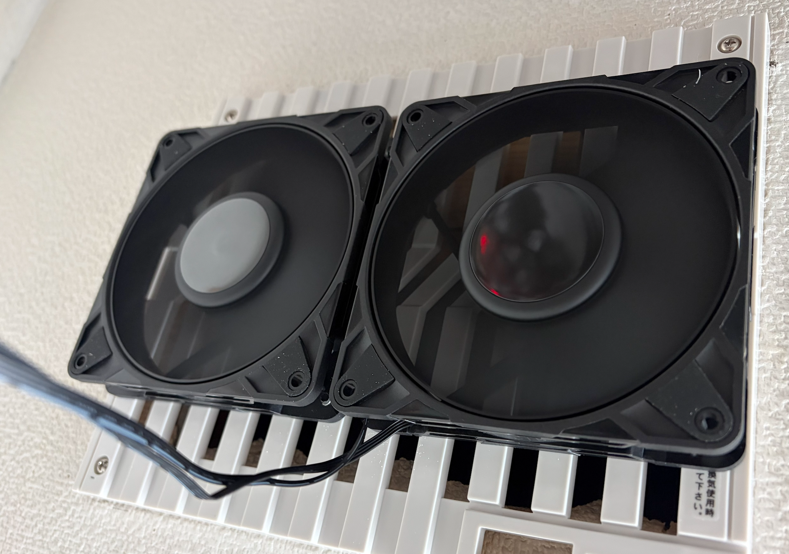
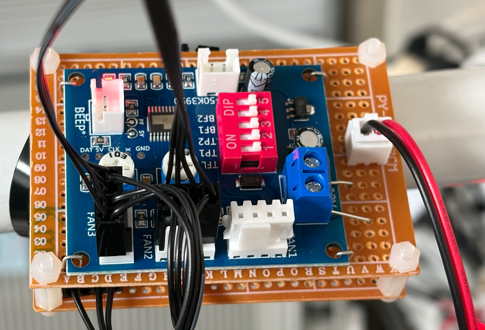

📗 天井の換気口を強制排気にした¶
2026/11/23公開 2026/11/24更新
🟩 背景¶
天井にある換気口から外気の匂いが時々侵入してくることがある。部屋の中が湿っぽい。─ということで、換気口に12cmのケースファンを２つ付けて強制排気にした。

🟩 構成¶
換気口の レジスタ と呼ばれる格子窓に8箇所ほど穴をあけ、12cmのケースファンを2機マウントした。
PWM方式のファンなので、ファンコントローラでPWM制御する必要があり、回転数も調節できるタイプを購入した。3機までのファンを制御できる。1機は温度調整機能のついたもので、キャップを被せて付け間違えないようにした。ファンコントローラへは12V DC電源でパワーを供給する。
ON/OFFのスイッチは12 DC電源側につけた。
逆回転もできるようにしたかったが、Claudeによると「ケースファンでは無理ゲー」とのこと。「同じファンを表裏逆に直列に重ねて取り付け、どちらかだけ電源をいれる」方法もお薦めされたが、4機構成になるし、イマイチ。

🟩 現在の状況と今後の予定¶
現在、連続運転試験実施中。
静かでなかなかいい感じ。
マウント部分に結構隙間がある。塞ぐかどうか様子見。
電力を計ったら、2機で3Wほどだった。